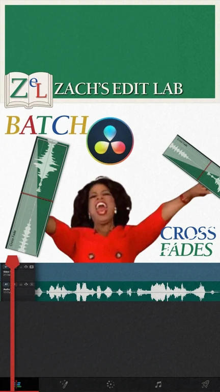

Batch fades
After I say “a DaVinci Resolve side quest,” I bring in the tutorial audio just before the picture changes. That overlap carries the intro into the lesson.
50,339 views · 2,825 saves
Instagram · November 23, 2026
I teach DaVinci Resolve by talking through the edit while I’m making it.

After I say “a DaVinci Resolve side quest,” I bring in the tutorial audio just before the picture changes. That overlap carries the intro into the lesson.
50,339 views · 2,825 saves
Instagram · November 23, 2026